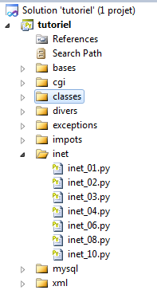
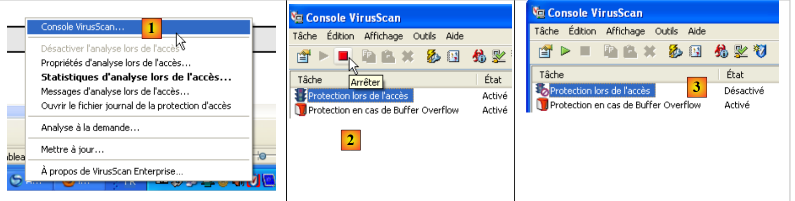

11. Python network functions
We will now discuss Python's network functions, which allow us to perform TCP/IP (Transmission Control Protocol/Internet Protocol) programming.
 |
11.1. Getting the name or IP address of a machine on the Internet
import sys, socket
#------------------------------------------------
def getIPandName(machineName):
#machineName: name of the machine whose IP address you want
# machineName --> IP address
try:
ip = socket.gethostbyname(machineName)
print "ip[%s]=%s" % (machineName, ip)
except socket.error, error:
print "ip[%s]=%s" % (machineName, error)
return
# IP address --> machineName
try:
name = socket.getHostByAddr(ip)
print "name[%s]=%s" % (ip, name[0])
except socket.error, error:
print "name[%s]=%s" % (ip,error)
return
# ---------------------------------------- main
# constants
HOSTS=["istia.univ-angers.fr","www.univ-angers.fr","www.ibm.com","localhost","","xx"]
# IP addresses of the machines in HOTES
for i in range(len(HOTES)):
getIPandName(HOTES[i])
# end
sys.exit()
Notes:
- Line 1: Python's network functions are encapsulated in the socket module.
11.2. A web client
A script to retrieve the content of the index page of a website.
import sys, socket
#-----------------------------------------------------------------------
def getIndex(site):
# reads the URL site/ and stores it in the file site.html
# initially no error
error=""
# creates the file site.html
try:
html = open("%s.html" % (site), "w")
except IOError, error:
pass
# error?
if error:
return "Error (%s) while creating the file %s.html" % (error, site)
# Open a connection on port 80 of site
try:
connection = socket.create_connection((site, 80))
except socket.error, error:
pass
# return if error
if error:
return "Failed to connect to the site (%s,80): %s" % (site,error)
# connection represents a bidirectional communication stream
# between the client (this program) and the contacted web server
# this channel is used for exchanging commands and information
# the communication protocol is HTTP
# the client sends the GET request to retrieve the URL /
# Syntax: GET URL HTTP/1.0
# HTTP protocol headers must end with a blank line
connection.send("GET / HTTP/1.0\n\n")
# The server will now respond on the connection channel. It will send all
# its data and then close the channel. The client reads everything coming from the connection
# until the connection is closed
line = connection.recv(1000)
while(line):
html.write(line)
line = connection.recv(1000)
# The client closes the connection in turn
connection.close()
# Close the HTML file
html.close()
# return
return "Successful transfer of the index page of the %s website" % (site)
# --------------------------------------------- main
# Get the HTML text from the URL
# list of websites
SITES=("istia.univ-angers.fr","www.univ-angers.fr","www.ibm.com","xx")
# read the index pages of the sites in the SITES array
for i in range(len(SITES)):
# Read the index page of the site SITES[i]
result = getIndex(SITES[i])
# display result
print result
# end
sys.exit()
Notes:
- line 57: the list of URLs for the websites whose index pages we want. This is stored in the text file [sitename.html];
- line 62: the getIndex function does the work;
- line 4: the getIndex function;
- line 20: the create_connection((site,port)) method allows you to create a connection with a TCP/IP service running on port port on the site machine;
- line 35: the send method allows data to be sent over a TCP/IP connection. Here, text is being sent. This text follows the HTTP (HyperText Transfer Protocol) protocol;
- line 40: the recv method is used to receive data over a TCP/IP connection. Here, the web server’s response is read in blocks of 1,000 characters and saved to the text file [sitename.html].
Successful transfer of the index paragraph from the istia.univ-angers.fr website
Successful transfer of the index paragraph from the site www.univ-angers.fr
Successful transfer of the index paragraph from the site www.ibm.com
Failed to connect to the site (xx,80): [Errno 11001] getaddrinfo failed
The file received for the site [www.ibm.com]:
- Lines 1–11 are the HTTP headers of the server’s response;
- line 1: the server instructs the client to redirect to the URL specified in line 8;
- line 2: date and time of the response;
- line 3: web server identity;
- line 4: content sent by the server. Here, an HTML page that begins on line 13;
- line 12: the empty line that ends the HTTP headers;
- Lines 13–19: the HTML page sent by the web server.
11.3. An SMTP client
Among TCP/IP protocols, SMTP (Simple Mail Transfer Protocol) is the communication protocol for the message delivery service.
# -*- coding=utf-8 -*-
import sys, socket
#-----------------------------------------------------------------------
def getInfo(file):
# returns the information (smtp, sender, recipient, message) from the text file [file]
# line 1: smtp, sender, recipient
# following lines: the message text
# open [file]
error=""
try:
info = open(file, "r")
except IOError, error:
return ("The file %s could not be opened for reading: %s" % (file, error))
# read the first line
line = info.readline()
# remove the end-of-line character
line = cutNewLineChar(line)
# retrieve the smtp, sender, and recipient fields
fields = line.split(",")
# Do we have the correct number of fields?
if len(fields) != 3:
return ("Line 1 of the file %s (SMTP server, sender, recipient) has an incorrect number of fields" % (file))
# "Processing" the retrieved information
# Remove any "whitespace" preceding or following the useful information from each of the 3 fields
for i in range(3):
fields[i] = fields[i].strip()
# retrieve the fields
(smtpServer, sender, recipient) = fields
message = ""
# read the rest of the message
line = info.readline()
while line != '':
message += line
line = info.readline()
info.close()
# return
return ("", smtpServer, sender, recipient, message)
#-----------------------------------------------------------------------
def sendmail(smtpServer, sender, recipient, message, verbose):
# sends message to the smtp server smtpserver on behalf of sender
# to recipient. If verbose=True, logs client-server exchanges
# retrieve the client's name
try:
client = socket.gethostbyaddr(socket.gethostbyname("localhost"))[0]
except socket.error, error:
return "IP error / Client name: %s" % (error)
# Open a connection on port 25 of smtpServer
try:
connection = socket.create_connection((smtpServer, 25))
except socket.error, error:
return "Failed to connect to the server (%s,25): %s" % (smtpServer,error)
# connection represents a bidirectional communication channel
# between the client (this program) and the contacted SMTP server
# this channel is used for exchanging commands and information
# after the connection is established, the server sends a welcome message that we read
error = sendCommand(connection, "", verbose, 1)
if(error) :
connection.close()
return error
# EHLO command:
error = sendCommand(connection, "EHLO %s" % (client), verbose, 1)
if error:
connection.close()
return error
# command mail from:
error = sendCommand(connection, "MAIL FROM: <%s>" % (sender), verbose, 1)
if error:
connection.close()
return error
# command receive to:
error = sendCommand(connection, "RCPT TO: <%s>" % (recipient), verbose, 1)
if error:
connection.close()
return error
# data command
error = sendCommand(connection, "DATA", verbose, 1)
if error:
connection.close()
return error
# prepare message to send
# it must contain the following lines
# From: sender
# To: recipient
# blank line
# Message
# .
data="From: %s\r\nTo: %s\r\n%s\r\n.\r\n" % (sender,recipient,message)
# send message
error = sendCommand(connection, data, verbose, 0)
if error:
connection.close()
return error
# quit command
error = sendCommand(connection, "QUIT", verbose, 1)
if error:
connection.close()
return error
# end
connexion.close()
return "Message sent"
# --------------------------------------------------------------------------
def sendCommand(connection, command, verbose, withRCLF):
# sends command to the connection channel
# verbose mode if verbose=1
# if withRCLF=1, append the RCLF sequence to command
# data
RCLF="\r\n" if withRCLF else ""
# send command if command is not empty
if command:
connection.send("%s%s" % (command, RCLF))
# echo if applicable
if verbose:
display(command, 1)
# read response of less than 1000 characters
response = connection.recv(1000)
# echo if necessary
if verbose:
display(response, 2)
# retrieve error code
errorCode = response[0:3]
# error returned by the server?
if int(errorCode) >= 500:
return response[4:]
# return without error
return ""
# --------------------------------------------------------------------------
def display(exchange, direction):
# Display "exchange" on the screen
# if sens=1 display -->exchange
# if direction=2 display <-- swap without the last 2 RCLF characters
if direction==1:
print "--> [%s]" % (swap)
return
elif direction==2:
l = len(exchange)
print "<-- [%s]" % exchange[0:l-2]
return
# --------------------------------------------------------------------------
def cutNewLineChar(line):
# remove the end-of-line character from [line] if it exists
l = len(line)
while(line[l-1]=="\n" or line[l-1]=="\r"):
l -= 1
return(line[0:l])
# main ----------------------------------------------------------------
# SMTP (Simple Mail Transfer Protocol) client for sending a message
# the information is taken from an INFOS file containing the following lines
# line 1: smtp, sender, recipient
# subsequent lines: the message text
# sender: sender's email
# recipient: recipient's email
# smtp: name of the SMTP server to use
# SMTP client-server communication protocol
# -> client connects to port 25 of the SMTP server
# <- server sends a welcome message
# -> client sends the EHLO command: its hostname
# <- server responds with OK or not
# -> client sends the mail from command: <sender>
# <- server responds with OK or not
# -> client sends the rcpt to command: <recipient>
# <- server responds OK or not
# -> client sends the data command
# <- server responds OK or not
# -> client sends all lines of its message and ends with a line containing only the character .
# <- server responds OK or not
# -> client sends the quit command
# <- Server responds with "OK" or "No"
# Server responses are in the form xxx text, where xxx is a 3-digit number. Any number xxx >=500
# indicates an error. The response may consist of several lines, all beginning with xxx- except for the last one
# in the form xxx(space)
# the exchanged text lines must end with the characters RC(#13) and LF(#10)
# # Mail sending parameters
MAIL="mail2.txt"
# retrieve the mail parameters
res=getInfos(MAIL)
# Error?
if res[0]:
print "%s" % (error)
sys.exit()
# send email in verbose mode
(smtpServer, sender, recipient, message) = res[1:]
print "Sending message [%s,%s,%s]" % (smtpServer,sender,recipient)
result = sendmail(smtpServer, sender, recipient, message, True)
print "Result of sending: %s" % (result)
# end
sys.exit()
Notes:
- On a Windows machine with antivirus software, the antivirus may prevent the Python script from connecting to port 25 of an SMTP server. You must therefore disable the antivirus. For McAfee, for example, you can do the following:
 |
- In [1], open the VirusScan console
- In [2], stop the [On-Access Protection] service
- in [3], it is stopped
The infos.txt file:
smtp.univ-angers.fr, serge.tahe@univ-angers.fr, serge.tahe@univ-angers.fr
Subject: test
line1
line2
line3
Screen results:
The message as seen by the Thunderbird email client:
 |
11.4. A second SMTP client
This second script does the same thing as the previous one but uses the features of the [smtplib] module.
# -*- coding=utf-8 -*-
import sys, socket, smtplib
#-----------------------------------------------------------------------
def getInfo(file):
# returns the information (smtp, sender, recipient, message) from the text file [file]
# line 1: smtp, sender, recipient
# following lines: the message text
# open [file]
error=""
try:
info = open(file, "r")
except IOError, error:
return ("The file %s could not be opened for reading: %s" % (file, error))
# read the first line
line = info.readline()
# remove the end-of-line character
line = cutNewLineChar(line)
# retrieve the smtp, sender, and recipient fields
fields = line.split(",")
# Do we have the correct number of fields?
if len(fields) != 3:
return ("Line 1 of file %s (SMTP server, sender, recipient) has an incorrect number of fields" % (file))
# "Processing" the retrieved information—removing any leading or trailing whitespace
for i in range(3):
fields[i] = fields[i].strip()
# retrieving the fields
(smtpServer, sender, recipient) = fields
# reading the message to be sent
message = ""
line = info.readline()
while line != '':
message += line
line = info.readline()
info.close()
# return
return ("", smtpServer, sender, recipient, message)
#-----------------------------------------------------------------------
def sendmail(smtpServer, sender, recipient, message, verbose):
# sends message to the smtpServer SMTP server on behalf of sender
# to recipient. If verbose=True, logs client-server exchanges
# we use the smtplib library
try:
server = smtplib.SMTP(smtpServer)
if verbose:
server.set_debuglevel(1)
server.sendmail(sender, recipient, message)
server.quit()
except Exception, error:
return "Error sending message: %s" % (error)
# end
return "Message sent"
# --------------------------------------------------------------------------
def cutNewLineChar(line):
# remove the end-of-line character from [line] if it exists
l = len(line)
while(line[l-1]=="\n" or line[l-1]=="\r"):
l -= 1
return(line[0:l])
# main ----------------------------------------------------------------
# SMTP (Simple Mail Transfer Protocol) client for sending a message
# the information is taken from an INFOS file containing the following lines
# line 1: smtp, sender, recipient
# subsequent lines: the message text
# sender: sender's email
# recipient: recipient's email
# smtp: name of the SMTP server to use
# SMTP client-server communication protocol
# -> client connects to port 25 of the SMTP server
# <- server sends a welcome message
# -> client sends the EHLO command: its hostname
# <- server responds with OK or not
# -> client sends the mail from command: <sender>
# <- server responds with OK or not
# -> client sends the rcpt to command: <recipient>
# <- server responds OK or not
# -> client sends the data command
# <- server responds OK or not
# -> client sends all lines of its message and ends with a line containing only the character .
# <- server responds OK or not
# -> client sends the quit command
# <- server responds with OK or not
# Server responses are in the form xxx text, where xxx is a 3-digit number. Any number xxx >=500
# indicates an error. The response may consist of multiple lines, all beginning with xxx- except for the last
# in the form xxx(space)
# the exchanged text lines must end with the characters RC(#13) and LF(#10)
# # Mail sending parameters
MAIL="mail2.txt"
# Retrieve the email settings
res=getInfos(MAIL)
# Error?
if res[0]:
print "%s" % (error)
sys.exit()
# send email in verbose mode
(smtpServer, sender, recipient, message) = res[1:]
print "Sending message [%s,%s,%s]" % (smtpServer,sender,recipient)
result = sendmail(smtpServer, sender, recipient, message, True)
print "Result of sending: %s" % (result)
# end
sys.exit()
Notes:
- This script is identical to the previous one except for the sendmail function. This function now uses the features of the [smtplib] module (line 3).
The mail2.txt file:
smtp.univ-angers.fr, serge.tahe@univ-angers.fr , serge.tahe@univ-angers.fr
From: serge.tahe@univ-angers.fr
To: serge.tahe@univ-angers.fr
Subject: test
line1
line2
line3
Screen results:
11.5. Echo client/server
We create an echo service. The server returns all text lines sent by the client in uppercase. The service can serve multiple clients at once using threads.
# -*- coding=utf-8 -*-
# Generic TCP server on Windows
# loading header files
import re, sys, SocketServer, threading
# multithreaded TCP server
class ThreadedTCPRequestHandler(SocketServer.StreamRequestHandler):
def handle(self):
# current thread
cur_thread = threading.currentThread()
# client data
self.data = "on"
# break if string is empty
while self.data:
# read text lines from the client using the readline method
self.data = self.rfile.readline().strip()
# console logging
print "client %s: %s (%s)" % (self.client_address[0], self.data, cur_thread.getName())
# send response to client
response = "%s: %s" % (cur_thread.getName(), self.data.upper())
# self.wfile is the write stream to the client
self.wfile.write(response)
class ThreadedTCPServer(SocketServer.ThreadingMixIn, SocketServer.TCPServer):
pass
# ------------------------------------------------------ main
# call syntax: argv[0] port
# the server is started on the specified port
# Data
syntax="syntax: %s port" % (sys.argv[0])
#------------------------------------- Checking the call
# there must be exactly one argument
nbArguments = len(sys.argv)
if nbArguments != 2:
print syntax
sys.exit(1)
# The port must be a number
port = sys.argv[1]
pattern = r"^\s*\d+\s*$"
if not re.match(pattern, port):
print "Port %s is not a positive integer\n" % (port)
sys.exit(2)
# Start the server - serves each client on a separate thread
host="localhost"
server = ThreadedTCPServer((host, int(port)), ThreadedTCPRequestHandler)
# The server is launched in a thread
# each client will be served in a separate thread
server_thread = threading.Thread(target=server.serve_forever)
# starts the server - infinite loop waiting for clients
server_thread.start()
# monitoring
print "Echo server listening on port %s" % (port)
Notes:
- line 39: sys.argv represents the script's arguments. Here, they must be in the form: script_name port. There must therefore be two of them. sys.argv[0] will then be script_name and sys.argv[1] will be port;
- line 53: the echo server is an instance of the ThreadedTcpServer class. The constructor of this class expects two parameters:
- parameter 1: a two-element tuple (host,port) that specifies the machine and the server’s listening port;
- parameter 2: the name of the class responsible for handling client requests.
- line 57: a thread is created (but not yet started). This thread executes the [serve_forever] method of the TCP server. This method is a loop that listens for client connections. As soon as a client connection is detected, an instance of the ThreadedTCPRequestHandler class will be created. Its handle method is responsible for communicating with the client;
- Line 59: The echo service thread is launched. From this point on, clients can connect to the service;
- line 27: the echo server class. It derives from two classes:
*SocketServer.ThreadingMixIn*andSocketServer.TCPServer. This makes it a multithreaded TCP server: the server runs in one thread, and each client is served in an additional thread; - Line 9: the class that handles client requests. It derives from the SocketServer.StreamRequestHandler class. It thus inherits two attributes:
- rfile: which is the read stream for data sent by the client—can be treated as a text file;
- wfile: which is the write stream used to send data to the client—can be treated as a text file.
- line 11: the handle method processes client requests;
- line 13: the thread that executes this handle method;
- line 17: loop for processing client requests. The loop ends when the client sends an empty line;
- line 19: reads the client request;
- line 21: self.client_address[0] represents the client’s IP address. cur_thread.getName() is the name of the thread executing the handle method;
- line 23: the response to the client has two components—the name of the thread serving the client and the command the client sent, converted to uppercase.
# -*- coding=utf-8 -*-
import re, sys, socket
# ------------------------------------------------------ main
# generic TCP client
# call syntax: argv[0] host port
# the client connects to the echo service (host,port)
# the server returns the lines typed by the client
# syntax
syntax="syntax: %s host port" % (sys.argv[0])
#------------------------------------- Checking the call
# there must be two arguments
nbArguments = len(sys.argv)
if nbArguments != 3:
print syntax
sys.exit(1)
# retrieve the arguments
host=sys.argv[1]
# the port must be a number
port = sys.argv[2]
pattern = r"^\s*\d+\s*$"
if not re.match(pattern, port):
print "Port %s must be a positive integer" % (port)
sys.exit(2)
try:
# Client connection to server
connection = socket.create_connection((host, int(port)))
except socket.error, error:
print "Failed to connect to the site (%s,%s): %s" % (host,port,error)
sys.exit(3)
try:
# input loop
line = raw_input("Command (press any key to stop): ").strip()
while line != "":
# send the line to the server
connection.send("%s\n" % (line))
# wait for the response
response = connection.recv(1000)
print "<-- %s" % (response)
line = raw_input("Command (press any key to stop): ")
except socket.error, error:
print "Failed to connect to the site (%s,%s): %s" % (host,port,error)
sys.exit(3)
finally:
# Close the connection
connection.close()
The server is launched in a command window:
A first client is launched in a second window:
The client receives, in response to the command it sends to the server, that same command in uppercase. A second client is launched in a third window:
The server console then looks like this:
Clients are properly served in different threads. To stop a client, simply enter an empty command.
11.6. Generic TCP Server
We propose to write a Python script that
- will act as a TCP server capable of serving one client at a time,
- accepts text lines sent by the client,
- accepts text lines from the keyboard and sends them back to the client.
Thus, the user at the keyboard acts as the server:
- they see the text lines sent by the client on their console;
- he responds to the client by typing the reply on the keyboard.
It can thus adapt to any type of client. That is why we will call it a "generic TCP server." It is a practical tool for exploring TCP communication protocols. In the following example, the TCP client will be a web browser, which will allow us to explore the HTTP protocol used by web clients.
 |
# -*- coding=utf-8 -*-
# generic TCP server
# loading header files
import re, sys, SocketServer, threading
# generic TCP server
class MyTCPHandler(SocketServer.StreamRequestHandler):
def handle(self):
# display the client
print "client %s" % (self.client_address[0])
# create a thread to read client commands
read_thread = threading.Thread(target=self.read)
thread_read.start()
# stop on 'bye' command
# read command typed on the keyboard
command = raw_input("--> ")
while command != "bye":
# send command to client. self.wfile is the write stream to the client
self.wfile.write("%s\n" % (command))
# read next command
command = raw_input("--> ")
def read(self):
# Display all lines sent by the client until the "bye" command is received
line = ""
while line != "bye":
# The client's text lines are read using the readline method
line = self.rfile.readline().strip()
# console logging
print "<--- %s : %s" % (self.client_address[0], line)
# ------------------------------------------------------ main
# call syntax: argv[0] port
# the server is launched on the named port
# Data
syntax="syntax: %s port" % (sys.argv[0])
#------------------------------------- Checking the call
# there must be exactly one argument
nbArguments = len(sys.argv)
if nbArguments != 2:
print syntax
sys.exit(1)
# The port must be a number
port = sys.argv[1]
pattern = r"^\s*\d+\s*$"
if not re.match(pattern, port):
print "Port %s is not a positive integer\n" % (port)
sys.exit(2)
# Start the server
host="localhost"
server = SocketServer.TCPServer((host, int(port)), MyTCPHandler)
print "Generic TCP service started on port %s. Stop with Ctrl-C" % (port)
server.serve_forever()
Notes:
- Line 57: The TCP server will be an instance of the SocketServer.TCPServer class. Its constructor accepts two parameters:
- the first parameter is a two-element tuple (host, port) where host is the machine on which the service runs (usually localhost) and port is the port on which the service waits (listens) for client requests;
- the second parameter specifies the client’s service class. When a client connects, an instance of the service class is created, and its handle method must manage the connection with the client.
The Tcp SocketServer.TCPServer is not multithreaded. It serves one client at a time;
- line 59: the Tcp server’s
serve\_forevermethod is executed. This is an infinite loop that waits for clients; - line 9: the TCP server here is a class derived from the SocketServer.StreamRequestHandler class. This allows the data streams exchanged with the client to be treated as text files. We have already encountered this class. We have the following methods:
- *
readline*to read a line of text from the client; writeto send text lines back to the client.
- *
- Line 12: self.client_address[0] is the client’s IP address;
- line 14: the TCP server will communicate with the client using two threads
- a thread for reading lines from the client;
- a thread for writing lines to the client.
- line 14: the thread for reading lines from the client is created. Its
targetparameter specifies the method executed by the thread. This is the one defined on line 25; - Line 25: The read thread is launched;
- Lines 25–32: The method executed by the read thread;
- line 28: the read thread reads all lines of text sent by the client until the line "bye" is received;
- line 18: we are now in the thread that writes to the client. The idea is to send the client all the lines of text typed by the user on the keyboard.
The server
The client browser
 |
The request received by the server
The server's response typed by the user on the keyboard (without the --> sign)
- Lines 1-5: HTTP response sent to the client;
- line 6: HTML page sent to the client;
- Line 7: End of the dialogue with the client. The client service will terminate and the connection will be closed, which will abruptly interrupt the thread reading the text lines sent by the client;
- Lines 1–5 of the HTTP response sent to the client have the following meanings:
- Line 1: The resource requested by the client was found;
- Line 2: Server identification;
- Line 3: The server will close the connection after sending the resource;
- Line 4: Type of resource sent by the server: an HTML document;
- line 5: an empty line.
The page displayed by the browser [1]:
 |
If we view the source code received by the browser [2], we can see that the HTML code received by the web browser is indeed the one we sent to it.